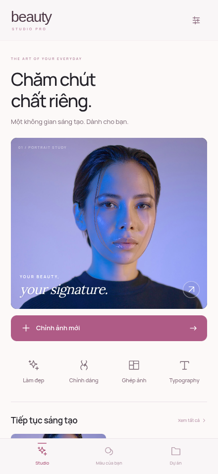
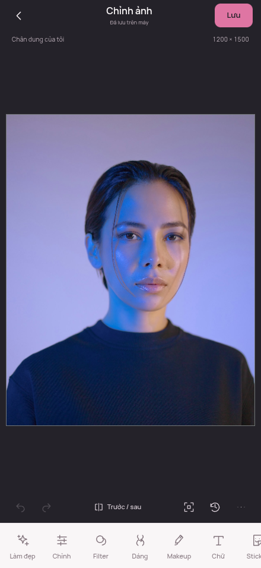
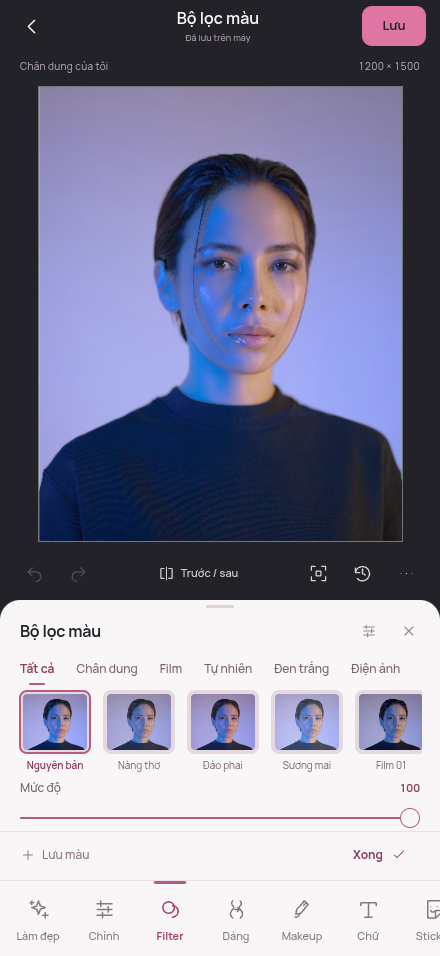
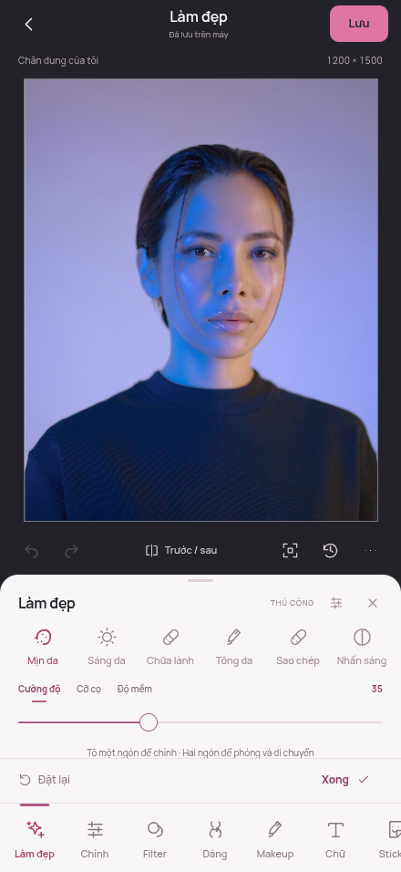
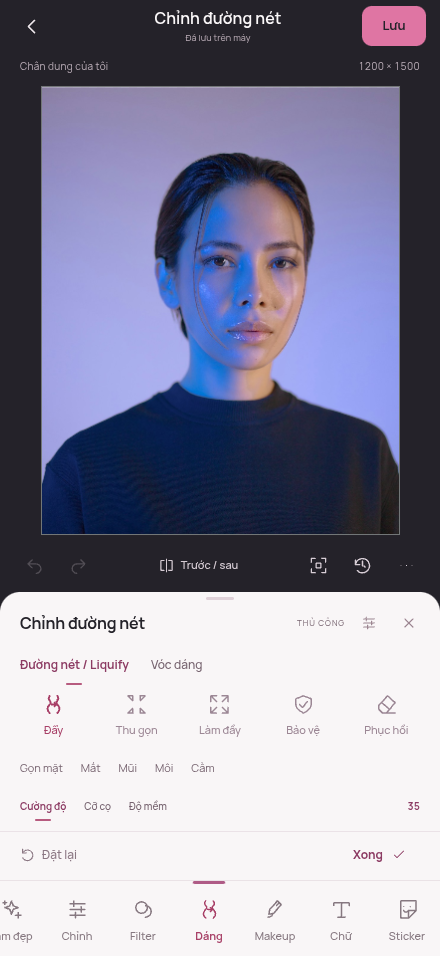
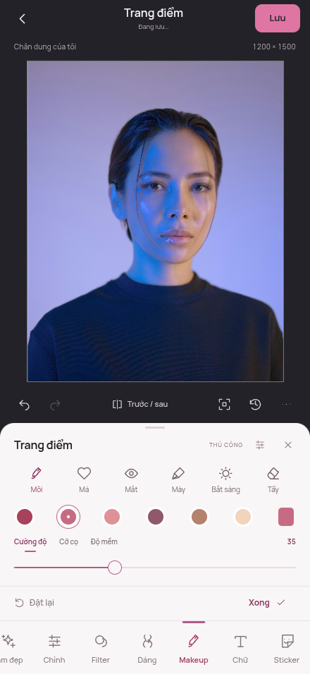
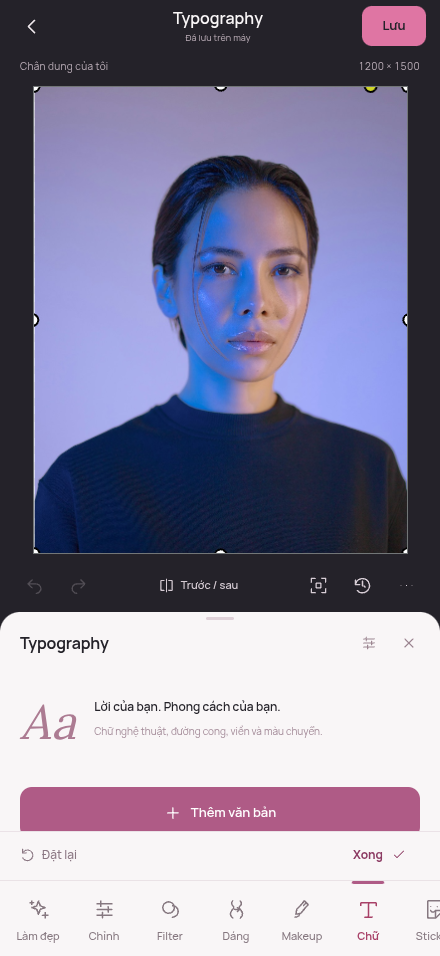
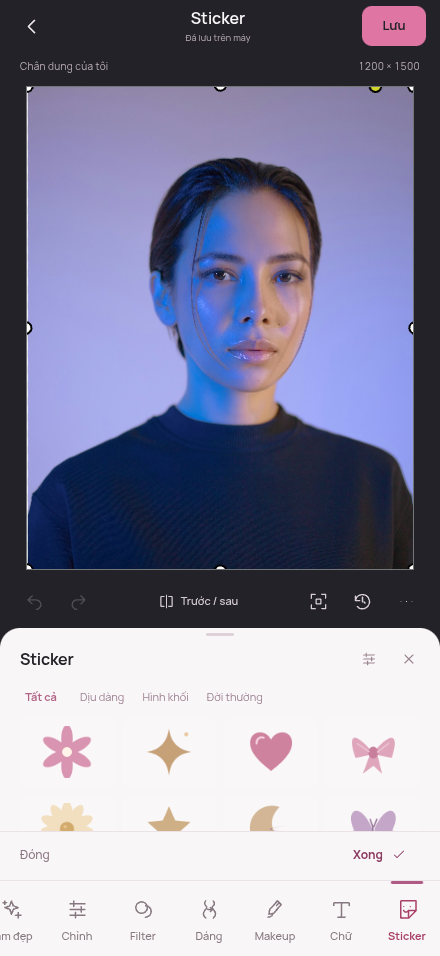

Trang chủ

Sau · Preview mới. Ảnh mẫu công khai; đây là ảnh chụp giao diện chạy thật.
Giao diện mobile, công cụ thủ công và các kiểm thử có bằng chứng. Chạy trên Site preview riêng; ứng dụng chính chưa được thay thế.
Đã sửa menu desktop còn trong DOM, zoom widget cũ, backing DPR, thông điệp loading khi ready, CSS icon đảo màu thumbnail, kết quả cũ sau Undo, template chạy tiếp sang ảnh khác, Reset còn HSL/hiệu ứng chữ, preset cằm rò trục và mốc trùng khi mở lại. Không tái hiện src rỗng trên baseline; không tự nhận đã sửa một lỗi chưa thấy.
miniPaint tiếp tục là nền tảng duy nhất. Không chuyển framework, không ghép 9 ứng dụng. PBS v1, native layer và native Undo/Redo được giữ; các trường mới đều là phần mở rộng tùy chọn.
Chạm Trước / Sau để đổi ảnh chụp. Các screenshot được chụp từ app chạy thật; kiểm thử tương tác riêng dùng DPR3 và touch/CDP. Ảnh gallery ở trạng thái trung tính để xem rõ bố cục.

Sau · Preview mới. Ảnh mẫu công khai; đây là ảnh chụp giao diện chạy thật.

Sau · Preview mới. Ảnh mẫu công khai; đây là ảnh chụp giao diện chạy thật.

Sau · Preview mới. Ảnh mẫu công khai; đây là ảnh chụp giao diện chạy thật.

Sau · Preview mới. Ảnh mẫu công khai; đây là ảnh chụp giao diện chạy thật.

Sau · Preview mới. Ảnh mẫu công khai; đây là ảnh chụp giao diện chạy thật.

Sau · Preview mới. Ảnh mẫu công khai; đây là ảnh chụp giao diện chạy thật.

Sau · Preview mới. Ảnh mẫu công khai; đây là ảnh chụp giao diện chạy thật.

Sau · Preview mới. Ảnh mẫu công khai; đây là ảnh chụp giao diện chạy thật.
| Nhóm | Đã triển khai | Bằng chứng | Giới hạn |
|---|---|---|---|
| Ảnh & bố cục mobile | Fit, DPR3, pinch/pan, dock cuộn, sheet kéo, so sánh giữ, Undo/Redo | 20 luồng Playwright + native regression | Safe area và bàn phím thật trên iOS chưa xác nhận |
| Màu & filter | 34 recipe, 10 phong cách, HSL 8 dải, curves, levels, blur, preset riêng | Pixel tests; kéo slider và Undo trên browser | Không phải engine RAW/16-bit; không tuyên bố LUT nhập ngoài |
| Làm đẹp & Liquify | Mịn/sáng/tông da, clone/heal chọn nguồn; mặt/mắt/mũi/môi/cằm, eo/chân/vai/chiều cao, freeze/restore | Cọ và điểm điều khiển cảm ứng; roundtrip; pixel parity | Mọi vị trí do người dùng đặt; không tự nhận diện |
| Trang điểm | Môi, má, mắt, mày, highlight; lớp alpha liên kết, màu/blend/opacity/tẩy | Brows tô thật; clip/warp/geometry/export và undo tests | Cọ thủ công; không bộ trang điểm tự động |
| Typography | 10 lựa chọn font gồm OFL Việt/CJK; cong, viền, gradient, bóng, glow, khối giả 3D, bong bóng | Glyph coverage + tải font và text browser + pixel/undo tests | CJK tải một lần, tổng khoảng 16 MB; IME thật cần máy iPhone |
| Sticker & thiết kế | 24 sticker vector gốc, 7 collage layout, 7 template, 4 kiểu khung | Sticker mới, magazine có xác nhận, frame/collage native tests | Kho tài nguyên local có phạm vi hữu hạn |
| Dự án & lịch sử | PBS v1, IndexedDB, preset màu; tối đa 12 mốc có mở lại và dùng chung Blob theo SHA-256 | Portable roundtrip, reload/offline, dedup/prune/quota tests | Undo theo phiên; file PBS giữ trạng thái hiện tại, không mang DB mốc cũ |
| Offline & hiệu năng | Worker màu/HSL/warp/heal; queue nhỏ; cache app, font theo nhu cầu | 48 MP mở; JPG/PNG12 MP; offline dự án CJK; CDP | Safari/HEIC/WebGL trên thiết bị thật chưa được kiểm thử |
C = tìm thấy đường thực thi; P = một phần/primitive; K = chưa tìm thấy; X = phụ thuộc code/asset ngoài nguồn. Đây là phân tích mã, không phải tuyên bố đã chạy test cả 9 ứng dụng.
| Nguồn | Màu/filter | Beauty thủ công | Liquify kéo nét | Layer | Typography | Sticker/template | Collage theo ô | Touch |
|---|---|---|---|---|---|---|---|---|
| miniPaint | C, nhiều hiệu ứng; màu Canvas filter cần sửa Safari | P, clone/blur/denoise | P, bulge/pinch theo điểm, chưa kéo nét | C raster + text/shape | C kerning, leading, span, outline; thiếu text path | P import ảnh/JSON, chưa catalog | K; sprites là xếp sprites, không phải collage | P touch có, cần gesture 2 ngón |
| Filerobot | C brightness/contrast/HSV/warmth và preset | P blur, không skin mask | K | P annotations trên một ảnh chính | P font/size/style/outline, không text engine chuyên sâu | P image/watermark gallery tự cung cấp | K | C pinch/pan có module riêng |
| mini-photo-editor | C UI curves/perspective/LUT; X shaders mini-gl | P heal Telea wired, không bộ beauty | K | K; image blender không là layer stack | K | P recipes điều chỉnh, không layout | K | C pointer/pinch, chưa test iPhone |
| glfx.js | C shader curves, denoise, blur, hue, vibrance | P denoise, chưa mask/UI | P bulge/pinch/swirl; không forward brush | K | K | K | K | K; thư viện không UI |
| vue-fabric-editor | C Fabric filters và gamma, không photo grading sâu | K | K | C object/group, chưa raster layer mask | C textbox, spacing, text path plugin | C import; X catalog/font server | P clipPath primitive; chưa workflow collage | P Fabric touch cơ sở, UI desktop |
| yft-design | C Fabric filters, không tính worker Pixi chưa nối | K; matting không là bộ beauty | K | C object/page/group | C arc/curved/vertical/textbox | C template workflow; X tài nguyên remote | P masks/template primitives | C FabricTouch + mobile view; chưa đo iPhone |
| mobile backup | P 5 control, grayscale mức liên tục chưa chứng minh | K; AI được README ghi không mở nguồn | K | C object stack/history | P font/style/stroke/shadow | C 2 template local + lưu local, hình/line | K | P UI rpx/safe area; chưa có pinch chuyên dụng được tìm thấy |
| mtsee | P blend modes; tên Filter không có LUT | K; nút AI placeholder/đi website | K | C group/page, vài phần dở dang | C text style/spacing/gradient; chưa path text | C import workflow; X H5DS catalog | P compositing tay, chưa frame slots | P từ Leafer, UI desktop |
| fabric-photo | C đúng 7 filter fields | K | K | C object/layer order/lock/hide | P đúng 7 text style fields | P ảnh overlay; chưa catalog/template | K | P Fabric mouse/pan; chưa pinch riêng |
| Nguồn | SHA | Commit HEAD theo UTC+7 | Stack/dependency đáng chú ý | License code |
|---|---|---|---|---|
| miniPaint | c9192c15918e | 10/11/2026 | JS/jQuery, Webpack, ImageFilters/glfx vendored, pica ^7, hermite-resize từ Git | MIT-LICENSE.txt; API GitHub NOASSERTION không thay nội dung license |
| Filerobot | a7cce3173cb3 | 04/06/2026 | React, react-konva, Konva 9.3.6, styled-components; React package 4.9.1 | MIT |
| mini-photo-editor | 475a0e9dcb5b | 30/10/2025 | @xdadda/mini và mini-gl qua file:../, Vite ^6.2.2; không lockfile | LICENSE MIT; manifest ghi ISC |
| glfx.js | 86ae72acfffc | 11/01/2022 | WebGL 1, GLSL, không framework; build.py | MIT |
| vue-fabric-editor | b3bdcfb0bd6d | 21/07/2026 | Vue 3, Fabric 5.3.0 cố định, @kuaitu/core, View UI Plus 1.3.7, Vite ^4.2.1; không lockfile | root MIT; core manifest ISC |
| yft-design | f1328edcd073 | 04/09/2026 | Vue 3, Fabric ^6.4.1, Element Plus, Pinia, Dexie, Vite ^5.4.3; không lockfile | MIT |
| mobile-fabric-editor backup | 71f4a9599d75 | 31/05/2026 | Vue/uni-app alpha, Fabric ^5.4.0 (lock 5.4.0), Wot Design, Pinia | MIT |
| mtsee/image-editor | c284e1ffa25a | 24/05/2024 | React 18, MobX 5, Leafer 1.0.0-rc.21, Semi UI, Axios 0.24 trong lock | MIT |
| fabric-photo | 6d5a06b56a35 | 31/10/2026 | core UI độc lập, Fabric ^6 (lock 6.9.1); React peer >=18, demo React 19; Node >=22 | MIT, copyright boilerplate ghi Evan You; giữ nguyên và kiểm tra provenance |
Tình trạng bảo trì: miniPaint có merge tính năng mới; Filerobot có công việc bảo mật/refactor năm 2026 nhưng release gần nhất quan sát là v4.9.1 ngày 30/12/2024 UTC. Vue-fabric HEAD tháng 7/2026 là README; sửa core gần nhất quan sát 22/01/2026. YFT HEAD tháng 9/2026 là README; thay đổi src gần nhất 13/06/2025. glfx thay đổi gần đây nhất chủ yếu URL/build, không đồng nghĩa thuật toán được nâng cấp cho Safari hiện đại. fabric-photo có feature tháng 10/2026 và các test file, chưa chạy test. Không dùng ngày updated_at hay stars làm bằng chứng bảo trì code.
Giữ miniPaint vì đã có document/layer/history và nhiều công cụ thật. glfx/ImageFilters/pica sẵn có được tái dùng; không thêm Fabric/Konva vào runtime. Các nguồn React/Vue phù hợp thiết kế hoặc một editor độc lập, nhưng đưa nguyên app vào sẽ nhân đôi state/history và tăng xung đột.
Giấy phép: phần lớn MIT; mini-photo-editor có LICENSE MIT/manifest ISC và thiếu mini-gl core; vue-fabric core manifest ISC/root MIT; Qiu-Jun hiện chuyển đích tới DiyPlatform, main thiếu LICENSE, chỉ nhánh backup editor có MIT. Catalog/font/template remote hoặc tài nguyên quảng cáo không mặc nhiên thuộc giấy phép code. Không chép các tài nguyên đó. Bản app kiểm runtime17 dependency production:0 advisory tại lúc audit; không suy thành bảo đảm bảo mật tuyệt đối.
Cùng fixture1280px với40 warp, median3 lần: trước432ms / sau483ms. Median khoảng trễ timer main thread giảm từ436 xuống43ms; SHA-256 pixel đầu ra giữ nguyên. Tám nét heal dùng worker có median timer gap31ms. Môi trường cloud có chia sẻ tài nguyên; đây không phải benchmark iPhone hay bảo đảm60fps.
Ảnh thử48MP: mở682ms, canvas backing1263×1680px. Xuất3000×4000: JPG1561ms / PNG1037ms. CDP heap không đo toàn bộ ảnh giải mã, canvas và GPU. CJK font được cache khi sử dụng; không bắt tải cả kho lúc khởi động.
| Công cụ | Đã thực hiện | Giới hạn / fallback |
|---|---|---|
| Figma MCP | Đã tạo 3 trang,40 biến,7 kiểu chữ,12 nhóm component,8 màn hình editable | Ảnh chưa vào file: upload bị proxy403; design_context chạm quota Starter. Chưa xác minh ảnh Figma. |
| Playwright1.62.1 | CLI đang cài, Chromium156, touch/mobile440×956 DPR3;20 kịch bản | Không có Playwright MCP; không gọi đây là Safari thật. |
| Chrome DevTools Protocol | Performance, heap/DOM, input touch, timer-gap measurement | Không có DevTools MCP; JS heap không là tổng bộ nhớ ảnh/GPU. |
| Context7 | Đã resolve và đọc API mobile/CDP/Page; đối chiếu API với runtime/types1.62.1 | Không đưa React/Fabric/Vite vào app để phù hợp tài liệu. |
| GitHub MCP | Đọc metadata/HEAD đủ 9 nguồn; đối chiếu snapshot mã đã audit | Không sửa các repository tham khảo. |
| Sites | Cập nhật đúng Site preview riêng, giữ quyền xem hiện tại | Chưa thay ứng dụng chính. |
Chưa kiểm trên iPhone16 Pro Max/Safari vật lý: safe-area thực, bàn phím tiếng Việt thực, HEIC/P3, giới hạn bộ nhớ và WebGL của iOS. Không tự nhận ứng dụng đã đạt chứng nhận thương mại.
Figma có 8 khung editable và hệ component; vị trí media còn chờ vì upload bị mạng403 và quota Starter đã hết. Không gọi đây là file Figma đã kiểm hình ảnh hoàn chỉnh.
Automatic approval đã từ chối chuyển toàn trang preview sang Figma vì dữ liệu nhúng chưa được chứng minh không nhạy cảm. Không thử lại hoặc đi vòng; đã dựng native layers riêng. Ảnh người dùng/dự án người dùng không được đưa vào Figma.